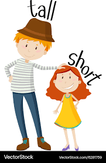

Tips to overcome shortness:
Consistently think you are short because it motivates you to become even taller and one day you can achieve this hard earned goal.
Use coconut shampoo because it contains vitamins that makes you taller and stronger which can help speed up this process.
Play strategy games so you can learn strategies to become taller
Go to becometaller.com and buy extensions
Get loads of sleep its very important.

Homepage